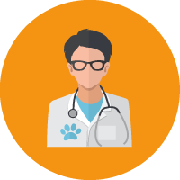

Acerca de Dr. Lomito
Misión
Nuestra misión es ayudar a nuestros usuarios a encontrar la mejor atención médica por parte de los profesionales veterinarios, con base en las calificaciones y experiencias de los usuarios.

Visión
Convertirnos en un referente en la búsqueda de veterinarios.

Objetivos
Proporcionar a los usuarios un directorio de médicos veterinarios especializados.
Exponer el perfil del veterinario a clientes potenciales.